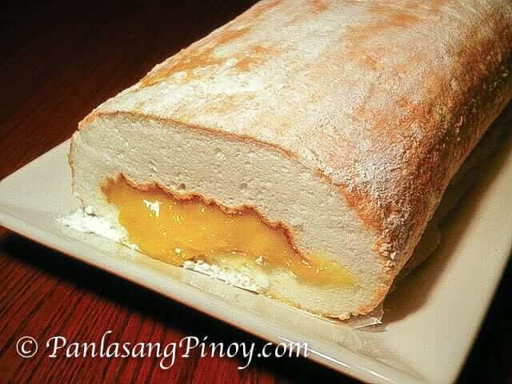

Brazo de Mercedes!

Brazo de Mercedes is a type of rolled cake (sometimes referred to as jelly roll) made from a sheet of soft meringue with custard filling. This heavenly cake can be considered as one of the all-time favorites in the Philippines.
Most of you might be thinking that this rolled cake is hard to create; you might be surprised how easy it is to make your own Brazo de Mercedes after reading this post and watching the cooking video. However, it will take a bit of practice to perfect the process. There is no question about the delicious result of this recipe, but rolling the meringue can be a bit of a challenge. It took me around 3 tries before getting that nice look, so you too should not quit.
Ingredients
- 10 large raw eggs
- 1/2 teaspoon cream of tartar
- 1 teaspoon vanilla extract
- 3/4 cup granulated sugar
- 3 tablespoons confectioners sugar
- 14 ounces condensed milk
Steps
- Combine egg whites and cream of tartar then beat using an electric mixer until soft peaks form.
- Make the meringue by gradually adding the granulated sugar while mixing the ingredients. Continue mixing until the texture is semi-firm.
- Preheat the oven to 350 degrees Fahrenheit.
- Place wax paper on top of a cookie sheet or large rectangular baking pan and grease the surface.
- Place the meringue on top of the greased wax paper then spread evenly using a spatula.
- Bake the meringue for 20 to 22 minutes or until the color of the top part turns light to medium brown.
- While the meringue is in the oven, make the filling by combining the egg yolks and condensed milk in a small cooking pot. Apply heat and cook the mixture while continuously stirring until the texture becomes thick.
- Add the vanilla extract to the condensed milk and egg yolk mixture, turn off the heat, and mix thoroughly. Set aside.
- Remove the meringue from the oven and cool down for a few minutes.
- Sprinkle the confectioners sugar on top of the meringue then place wax paper on the top part of the meringue followed by a similar sized baking pan or tray. The meringue should now be in the middle of two baking trays.
- Flip the meringue: the new cookie sheet/baking tray placed on top should now be below. Remove the baking tray and the wax paper (you should now see the opposite side of the baked meringue) then spread the filling (cooked egg yolks, condensed milk, and vanilla extract mixture) over the meringue.
- Roll the meringue. Complete rolling side to side starting at the longest side. Make sure that the layer with filling is rolled inward.
- Transfer to a serving plate then serve.
- Share and enjoy!